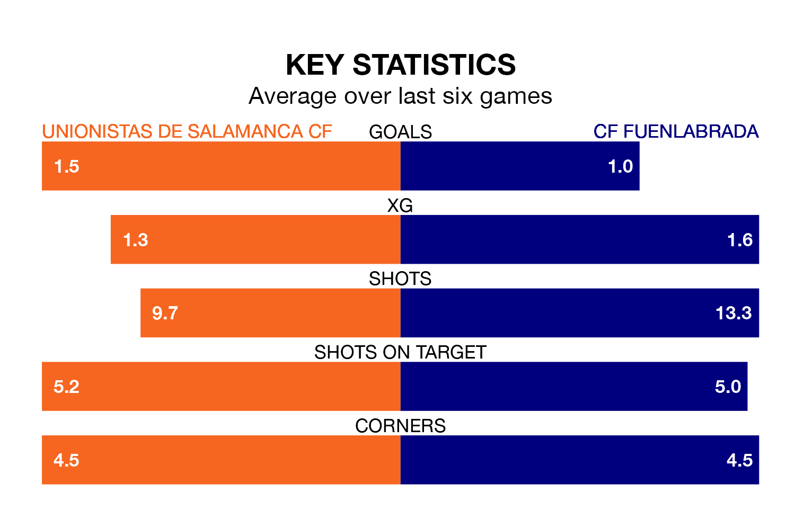

Unionistas de Salamanca CF face CF Fuenlabrada on Sunday seeking to protect their long unbeaten run in Primera Division RFEF Group 1.
Unionistas de Salamanca are unbeaten in seven, with three wins and four draws, ahead of the 3pm kick-off.
They face a Fuenlabrada team who have won one and drawn three over the same number of games.
With 18 goals in 23 games so far this season, Unionistas de Salamanca are scoring at below the league average rate with 0.8 goals per game. But they are conceding fewer than average too, letting in 18 goals at a rate of 0.8 per game.
Fuenlabrada, meanwhile, are average scorers, with 1.0 goal per game. They have also conceded 1.0 goal per game.
In the last five years, Unionistas de Salamanca and Fuenlabrada have played each other on four occasions. They won one each, and they drew twice.
On average, Unionistas de Salamanca scored 1.2 goals and Fuenlabrada 1.0 in those matches.
Their last meeting was on November 26, when they played out a 0-0 draw.
The hosts are ninth in the table after 23 games, of which they have won seven and drawn 10, earning 31 points.
The away team are two places behind Unionistas de Salamanca in 11th, with seven wins and nine draws putting them on 30 points.
Unionistas de Salamanca's last match was on February 10, a 1-1 draw against SD Ponferradina, with Jon Rojo Sagarna getting the goal for Unionistas de Salamanca.
Fuenlabrada beat Sestao River Club 3-1 last time out, on February 11, with Sergio Benito Crujera on the scoresheet.
Updated: 13:30 (UTC), 12/02/24